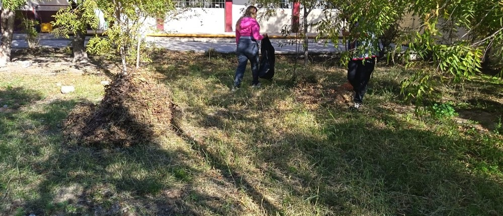
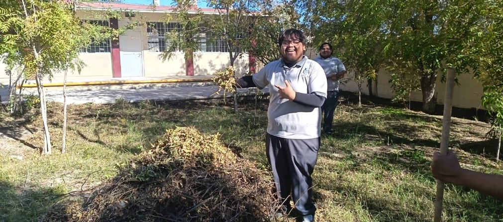
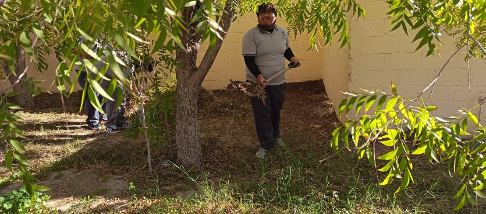
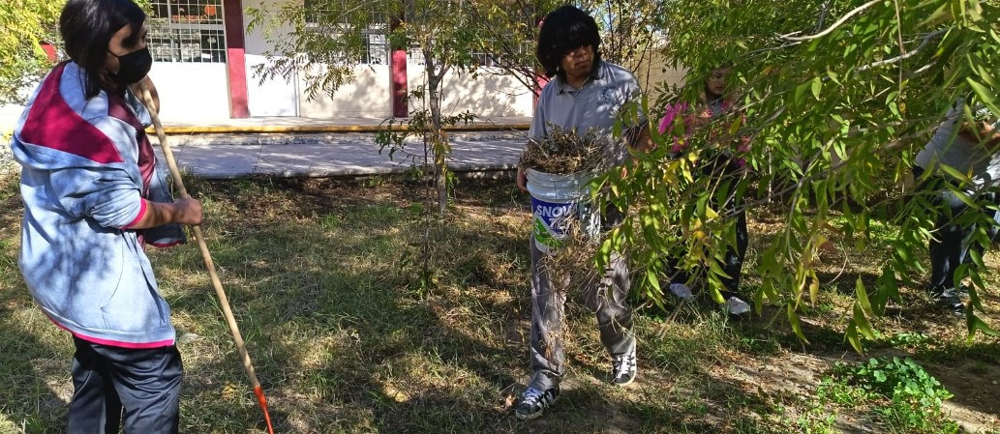

el reciclaje en nuestra escuela
- ¿qué residuos se generan en nuestra escuela?
- ¿dónde se acumula más basura en nuestra escuela?
- ¿qué problemas existen actualmente en nuestra escuela?
¿qué residuos se generan en nuestra escuela?
Identificar los residuos que se generan dentro del plantel educativo.
En nuestra escuela, el CBTis 269, se generan diferentes tipos de residuos debido a las actividades diarias de estudiantes, maestros y personal administrativo.
Los principales residuos que podemos encontrar son:
- Plástico: Botellas de agua, bolsas, envolturas de alimentos y vasos desechables.
- Papel y cartón: Hojas utilizadas, cuadernos, cajas y cartulinas.
- Residuos orgánicos: Restos de comida, cáscaras de frutas y servilletas con residuos de alimentos.
- Metal: Latas de bebidas y otros envases metálicos.
¿dónde se acumula más basura en nuestra escuela?
Los lugares donde puede acumularse una mayor cantidad de residuos son:
- La cafetería y sus alrededores, debido al consumo de alimentos y bebidas.
- Los patios y áreas de descanso, donde los estudiantes conviven durante el receso.
- Los salones de clases, por el uso constante de papel y otros materiales escolares.
- Las áreas cercanas a los botes de basura, especialmente cuando se encuentran llenos.


¿qué problemas existen actualmente en nuestra escuela?
Algunos problemas relacionados con el manejo de residuos en la escuela son:
- Estudiantes que dejan envolturas y botellas en el suelo.
- Falta de separación entre residuos orgánicos e inorgánicos.
- Desperdicio de papel que todavía podría reutilizarse.
- Acumulación de basura en patios y espacios comunes.
- Poca participación de algunos estudiantes en las actividades de limpieza y reciclaje.
Propuestas para mejorar el reciclaje en nuestra escuela:
- Colocar contenedores identificados para separar los residuos.
- Realizar campañas de concientización entre los estudiantes.
- Reutilizar hojas de papel y materiales escolares.
- Organizar jornadas de limpieza.
- Promover el reciclaje de botellas de plástico, latas y cartón.


Inicio